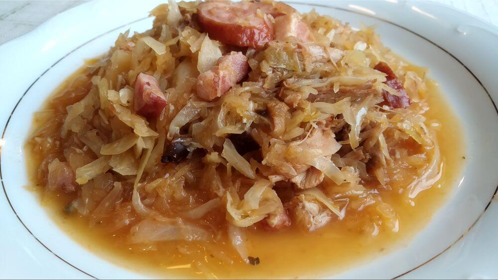

Bigos/Hunter'Stew

DESCRIPTION
Bigos is often translated into English as "Hunter's" Stew', but there's a specific recipe that deserves that "Hunter's" status more. Bigos Myśliwski (literally:"Hunter's" Bigos', pron.: bee-gohs mish-leevskey) brings a taste of the forest on our plates.
INGREDIENTS
- 2.2 lb (1 kg) venison/game meat (venison, boar, elk, lamb - see notes)
- 3.5 oz (100 g) smoked raw bacon (in a piece)
- 1 handful (0.35 oz, 10 g) dried porcini mushrooms
- 1 - 2 onions
- 2 garlic cloves
- 1 tbsp honey
- 5 all-spice berries
- 8 juniper berries
- 3 - 4 dried bay leaves
- 8 dried, smoked prunes
- 3.5 oz (100 g) kiełbasa "myśliwska" (smoked & dried hunter's sausage - see notes)
- 3.5 oz (100 g) kiełbasa "jałowcowa" (juniper sausage - see notes)
- 1.5 cup (360 ml) dry red wine
- 14 oz (400 g) sauerkraut
- 5.3 oz (150 g) fresh white cabbage
- 2 - 3 tbsp apple or elderberry vinegar
- salt, to taste
- coarsely ground black pepper, to taste
- canola oil, for frying
INSTRUCTIONS
- Cut all the meats into thick chunks. Season them with coarsely ground black pepper. Pour canola oil into the frying pan and set on a medium heat. Fry the meat in hot oil until golden brown.
- As the meat fries, dice the 3.5 oz of bacon, a handful of dried porcini mushrooms, one large or two smaller onions and slice 2 cloves of garlic. Add everything into the pan with fried meat. Stir and braise everything together until the onion starts to turn transparent.
- Let's start seasoning. Add 3 to 4 dried bay leaves, 5 all-spice berries, 8 juniper berries and 1 tablespoon of honey.
- Cut smoked prunes in half. Cut both kiełbasa sausages into rounds and add them in.
- Pour in 1.5 cup of dry red wine. Set the heat on "low" and braise for 40 minutes, stirring occasionally.
- Chop sauerkraut roughly (as always - keep the juices, they might come in handy later!).
- Chop white cabbage into small cubes. Add to the pan. If you feel there's not enough liquid, pour in more wine, meat stock or water. Braise on the lowest possible heat for 2 hours.
- To finish off, and 2 to 3 tablespoons of vinegar. Have a taste - if the dish needs more "kick", add a few tablespoons of sauerkraut juice as well.
- Serve with some fresh bread.
NOTES
- The original recipe mentions 2.2 lb (1 kg) fallow deer meat, but any game meat works great. Venison, boar, elk, lamb, duck, goose - the more, the merrier.
- Same goes for kiełbasa. The recipe mentions 'Myśliwska' and 'Jałowcowa', but if you have a nice wild boar sausage - great!
- I've increased (doubled) the amount of dried wild mushrooms.
ENJOY! SMACZNEGO!
Return to main page